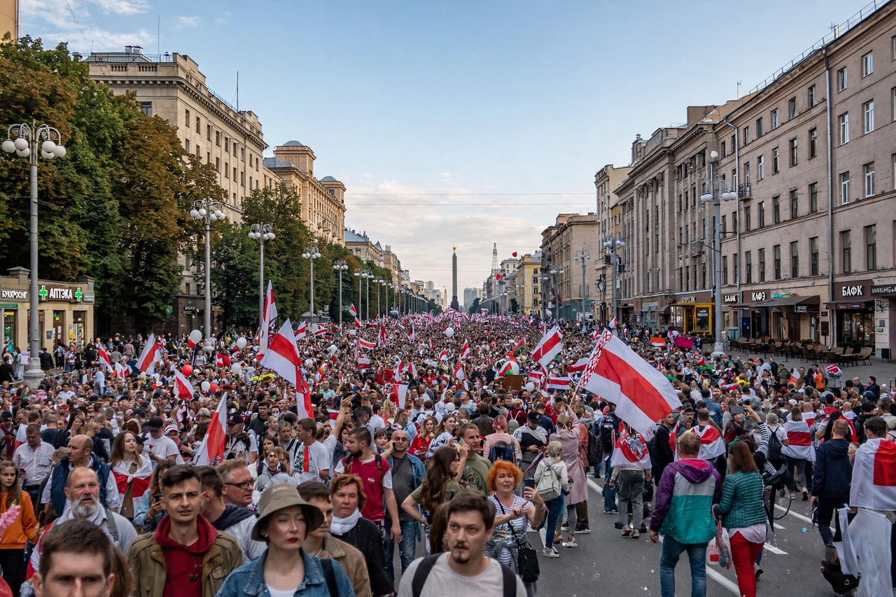

| 2020 Belarusian presidential election | |
 Protests in Minsk, August 2020 | |
| Date | 9 August 2020 |
|---|---|
| Incumbent | Alexander Lukashenko (since 1994) |
| Main challenger | Sviatlana Tsikhanouskaya |
| Official result | Lukashenko 80.1%, Tsikhanouskaya 10.1% (disputed) |
Presidential elections were held in Belarus on Sunday 9 August 2020. The official results gave incumbent Alexander Lukashenko, in power since 1994, a sixth term with about 80% of the vote. The result was widely denounced as rigged by the opposition, the European Union, and the United States, and triggered the largest protests in the country's history.
Several prominent challengers were barred or jailed before the vote, including banker Viktar Babaryka and blogger Siarhei Tsikhanouski. Tsikhanouski's wife, Sviatlana Tsikhanouskaya, ran in his place, uniting much of the opposition in alliance with Veronika Tsepkalo and Maria Kalesnikava, and drawing rallies of tens of thousands. Official turnout and early voting were unusually high, and the campaign took place during the COVID-19 pandemic, which Lukashenko had publicly downplayed.
On election night, as state exit polls announced Lukashenko's landslide, protests erupted across the country and were met with stun grenades, rubber bullets, mass arrests, and an internet shutdown. Subsequent Sundays saw marches in Minsk estimated at over 100,000 people, alongside strikes in state factories. Thousands of detainees reported beatings and torture. Tsikhanouskaya left for Lithuania on 11 August under pressure from the authorities and led the opposition from exile. By 2021 the movement had been suppressed through mass arrests, forced exile, and the closure of independent media and NGOs.
The EU, UK, US, and Canada refused to recognise Lukashenko as legitimately re-elected and imposed sanctions on Belarusian officials. Russia supported Lukashenko with a loan and media personnel, deepening Belarus's dependence on Moscow.